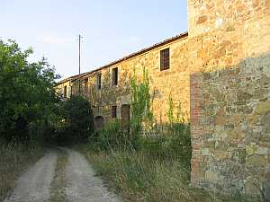
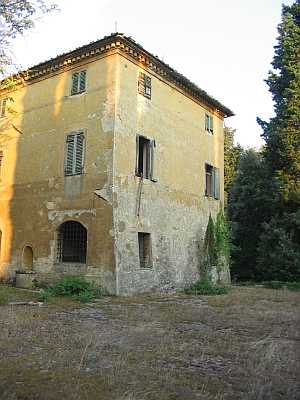
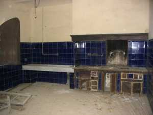

La cappella, contigua alla Villa, dedicata a S. Antonio da Padova (Vedi Storia religiosa) è anteriore alla villa essendo stata innalzata nel 1688 dalla famiglia Perfetti. Difficile se non impossibile dare una data di nascita al podere di Passeggeri, ma si può ipotizzare che in tempi antichi facesse parte della chiesa di Coschine così come la ricordata Barberino. Incluso nella parrocchia di Basciano nel Cinquecento, risulta poi di Vagliagli per essere scambiato nel 1818 con il podere di Mucenni ed entrare così a far parte del popolo di Quercegrossa. Da un battesimo del 1584 troviamo che il proprietario di Passeggeri è Mario Cosci e comare una Borselli di Barberino, mentre nel 1580 vi risulta contadino Mariano Brogi. Nel 1692 Bernardino Perfetti acquisisce dei beni da Pietro Mochini posti nel comune di Coschine luogo detto
"a Barbarino … dentro ai suoi" . Comunque Passeggeri, appartiene alla famiglia Cosci che lo conserva fino a metà del Seicento quando gli subentra nel possesso Bernardino Perfetti, senese. I Cosci vendono la proprietà di Passeggeri e dell’altro podere di Poggiobenichi e spariscono per sempre dalle nostre zone. La proprietà Perfetti si prolunga per un secolo e mezzo poi, in data imprecisata, passa a Innocenzo Piccolomini - Clementini che appare per la prima volta nel 1803. Parte del fabbricato manterrà per qualche decennio la dicitura di
"Commenda Perfetti". Successivamente, nel 1825, troviamo il nuovo proprietario Bandi Santi di Agostino e dopo di lui per successione ai suoi figli fino al 28 giugno del 1876 quando passa tutto a Verdiani Bandi Luigi Arnolfo e Sofia maritata Cinotti del fu Agostino. I nuovi padroni, evidentemente poco interessati, cedono entro tre mesi, il 9 settembre, tutta la proprietà a Roberto Pallini e, attraverso di lui, passa alla sorella Emma, vedova di Tito Sarrocchi che acquista con atto del il 19 maggio 1903. La morte di Emma il 3 luglio 1909 porta i figli ad ereditare e in data 2 gennaio 1910 passa per 14/20 a Guido e Gino Sarrocchi e i rimanenti 6/20 rispettivamente alle sorelle Adele, Giuditta e Annina. Infine, a fine anno, il futuro senatore Gino liquida il fratello Guido e resta proprietario con le sorelle fino al 1932, quando sarà unico proprietario. In seguito, il 20 luglio 1939 Gino Sarrocchi dona Passeggeri alla figlia Ida per il 50% e alle nipoti Maria-Natalie e Sonia ed eventuali nascituri di Ida l’altro 50%. Oggi, l’ultima discendente di Tito Sarrocchi, Sonia, mantiene ancora la proprietà.
Il podere detto di Passeggeri comprendeva oltre quaranta ettari di terreno di cui circa dodici coltivati e una trentina di bosco. Producevano un minimo di grano, ma molto olio. Nella stalla un paio di bovi e un paio di vacche e qualche vitello. Inoltre maiali, pollaio e pecore fino all’immediato dopoguerra.
La lista dei contadini che hanno abitato nel podere dei Passeggeri è abbastanza breve a causa dei lunghi tempi di permanenza degli stessi che in qualche caso hanno raggiunto il secolo. Nel 1581 vi abita Piero di Lorenzo e nel 1592 il mezzaiolo del Cosci è Agnolo di Pippo che denunzia un raccolto di grano del podere di moggia 9 e staia 6 pari a ql. 46 circa. Nel 1591 vi muore la moglie di Filippo, mezzaiolo di Francesco Cosci, e l’anno successivo
“lo spagnolo", parente di Filippo. Nel 1618 vi abitano i Fiaschi e dopo di loro, nel 1668, i Viligiardi, una numerosa famiglia che conta un massimo di ventuno unità. Ai Viligiardi subentrano dal 1723 i Guideri che matureranno una permanenza di un secolo esatto partendo nel 1821. Si ricorda un Bernardino (come il padrone Perfetti) e Angiolo. Dal 1822 vi abitano i Bartalini per oltre cinquanta anni, altra famiglia numerosa con diciassette persone, e per chiudere il secolo Renzi, Pierini, Bandini e Vannini. Nel 1901 Barberino risulta vuoto mentre a Passeggeri sono registrati Cesari, Pieri e Vannini. Nel 1911 vi abita il fattore Ezio Vannini nella fattoria, Parigi Giuseppe in una pigione, e il colono Bernardo Vannini. Al censimento del 1921 risultano il salariato Giuseppe Rossi nel nuovo quartiere, il fattore Ezio in fattoria e ancora Pasquale Vannini contadino ed Elio Burresi in Barberino. Un decennio dopo è sempre fattore il Vannini Ezio e sono arrivati i Bencini nel podere; Rossi e il bracciante Gambassi pigionali, mentre Ginetta Porciatti abita in fattoria. I Bencini saranno l’ultimi mezzadri del podere di Passeggeri e intorno a loro, dal 1936, entrano e se ne vanno alcune famiglie di operai a cominciare dai Fanetti, poi il guardia Perugini, Barbucci, Ghini, Valenti, Oreste Polvani altra guardia, l’autista Lari e il factotum Agostino Maggi. Tra i fattori dopo il Vannini, si ricorda Giovanni Margiacchi, il Degli Esposti, il Calonaci e l’ultimo, Arnone.
Barberino
L’abitazione detta Barberino, chiamato da qualche decennio erroneamente Alberino, ospitò braccianti e mezzadri e vide di recente abitarvi alcune famiglie conosciute come i Provvedi nel 1936, poi i Florindi, i Pagnini e per ultimi i Leonini come mezzadri. Il podere negli ultimi tempi era dotato di cinque/sei ettari di terra, aveva una stalla per due vacche e qualche vitello che
"tiravano su per la vendita". Poi maiali e pollaio. Negli ultimi anni i Leonini non avevano più bestie. L’aia rimaneva a sinistra guardando la villa. Da quella parte c’erano le cantine comuni dove ogni contadino aveva le sue botti e c’era il vecchio ambiente per l’imbottigliamento. Per l’acqua avevano una cisterna dove attingevano e nei periodi di siccità andavano alle sorgenti (fonti) di Castagnoli.


A sinistra la villa ripresa dal lato ovest e l'interno della grande cucina decorata con splendide mattonelle blu scuro, luogo di memorabili cucinari per il senatore Sarrocchi e i suoi ospiti cacciatori.
Sotto, la fattoria e l'Uccellanda luogo di caccia del Senatore,